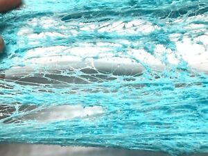

Spider Web Slime
You know that spider web in a bag stuff that you can buy around Hallowe’en time? Well, I thought I could use that to make a really cool slime.
Procedure
- Pour 1/2 cup glue in a bowl.
- Add in 1/2 cup of water and stir them together.
- In a small bowl, combine 1 cup of water and 1 tsp. of borax.
- Slowly pour the borax mixture into the glue mixture, stirring until it has reached slime consistently.
- Knead the slime with your hands for a few minutes.
- Add 1 Tbsp. Instant Snow to the slime.
- Work the Instant Snow in by kneading until it is fully mixed into the slime.
- Slowly add up to 1 tsp. more Instant Snow until you reach the texture and look you’re looking for. Continue to knead.
- The slime will be stiff at first, but as you continue kneading, it will get better and better. It takes a bit for the Instant Snow to expand.
- Add in a few plastic spiders or some polymer ones.
ENJOY!

For the spiders, only a small amount of polymer clay is needed. Roll 2 small balls of black polymer clay for the spider’s body. Then make
a long snakelike piece and cut out the legs. Shape together. Bake on wax paper at 275° for a few minutes.
The polymer spiders will not stick very well, but they are great for imaginative play! They are fun for kids to make and they can use them for other Hallowe’en decorating or play as well.